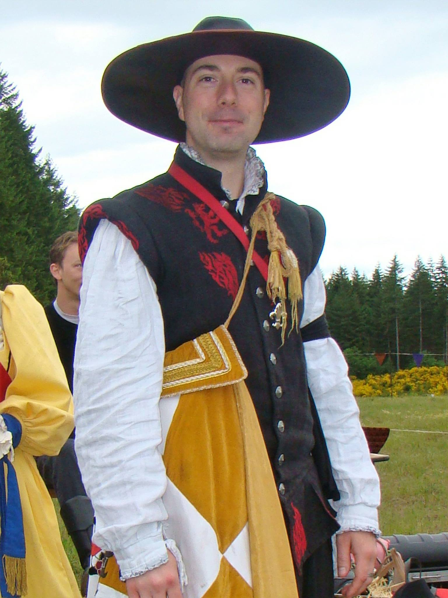
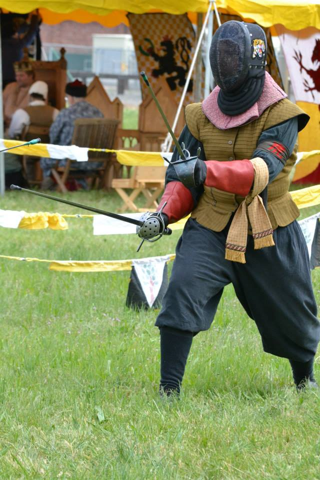
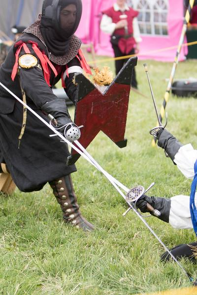
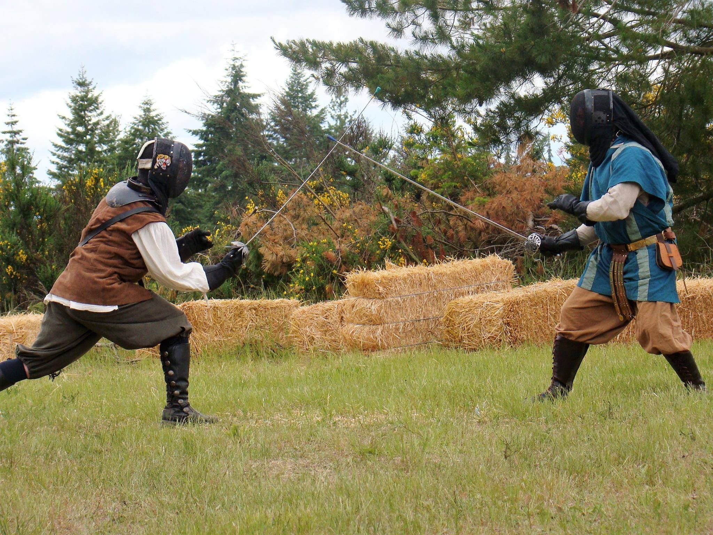
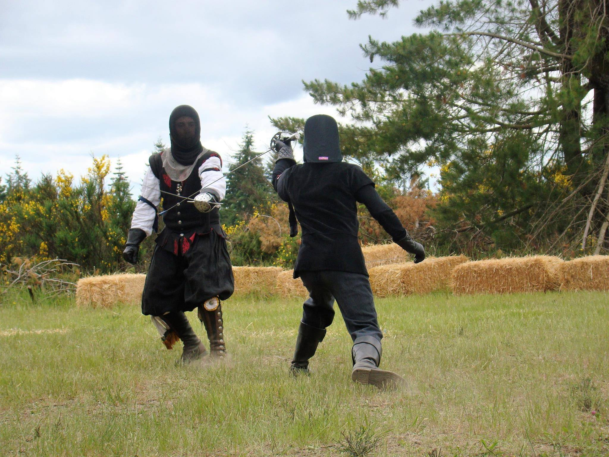
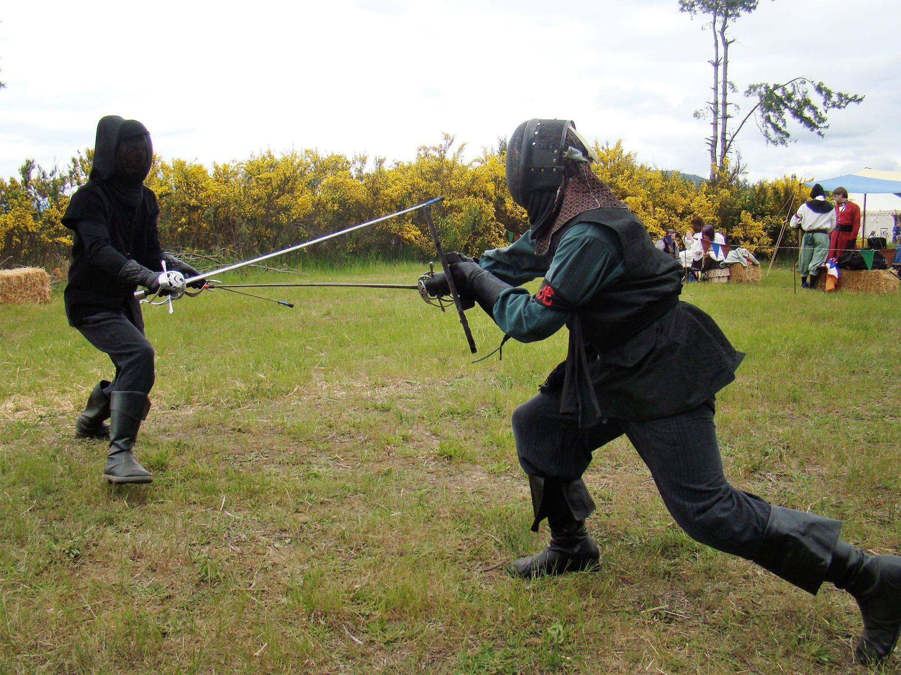
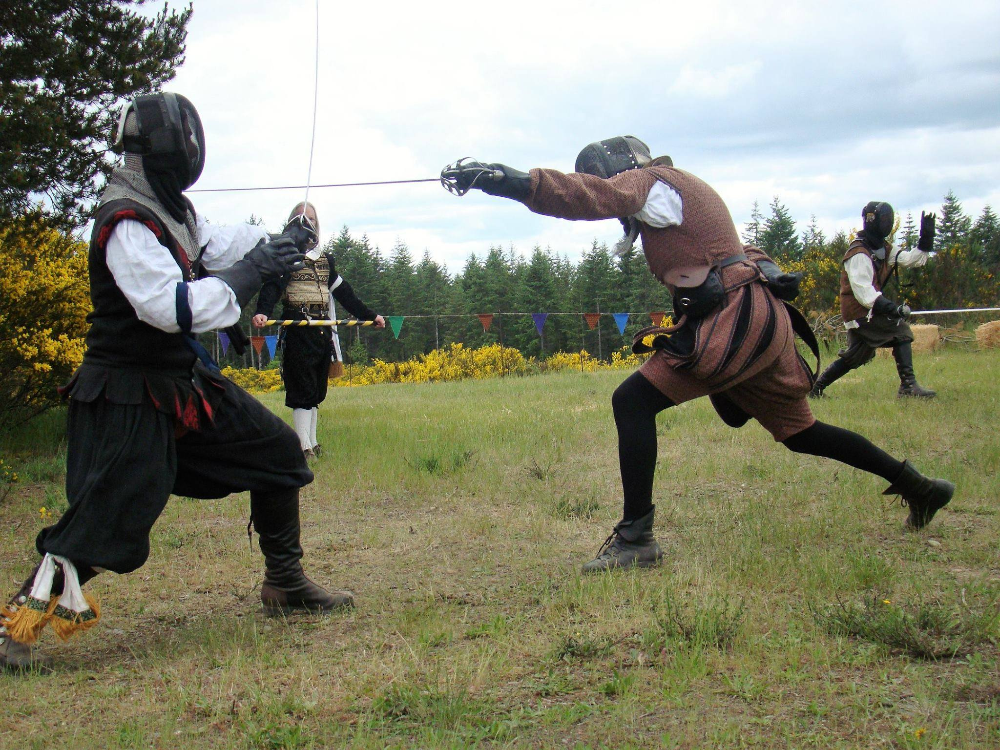
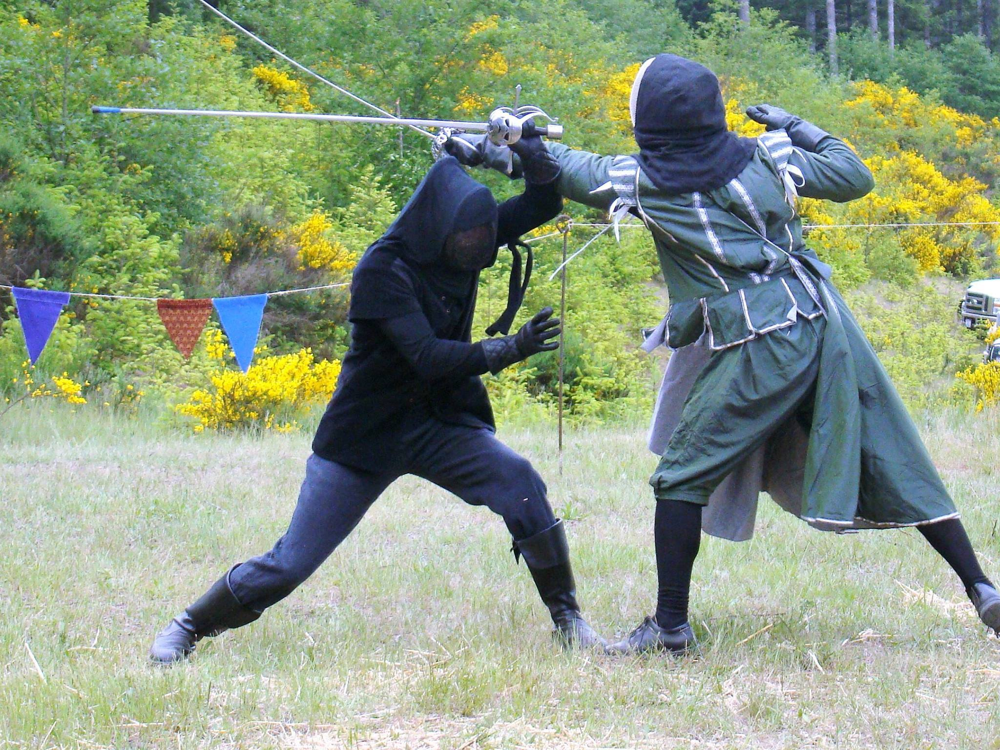
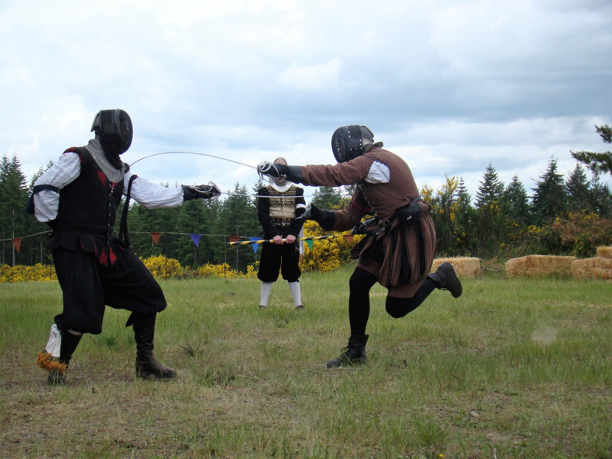

The Black Tiger approach to historical fencing is to strive for mastery of the art. We measure our mastery by challenging ourselves and others in both competitive and friendly arenas. We seek to master fencing as a martial art not just a sport, and practice techniques based on how effective they would be in a real fight, not just based on what works within the rule set we're using. We look for ideas and inspiration in the works of the Renaissance fencing masters, but don't blindly imitate them. We also innovate techniques that were never described in the historical sources, if they prove effective in our sparring.
The Instructor
Our classes are taught by Jason Prendergast, a three-time rapier champion of the SCA for the Pacific Northwest, Master of Defense, and fifth-rank Black Tiger. He was a student of Rob Childs, currently one of the world's top rapier fighters and the co-founder of the Black Tiger School. Jason teaches all levels and ages of students, with a focus on fitness, fundamentals, and competitive prowess. His students have won all of the biggest SCA rapier tournaments in the Pacific Northwest.
Instructor
Instructor In Action 1
Instructor In Action 2
Techniques Highlights
Lemon drops gummies apple pie apple pie macaroon sugar plum. Cotton candy lollipop cupcake sugar plum. Dragée tootsie roll jelly beans jelly-o powder tart jelly beans powder. Donut cake tart lemon drops cookie cookie lemon drops halvah brownie.
On Guard
Retreat
Advance
Lunge
Attack
Attack and Defence